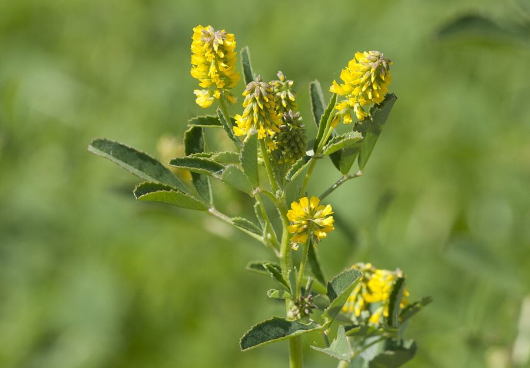

सेंजीSweet Clover
Melilotus indicus · Fabaceae · FLR-0148

- Scientific name
- Melilotus indicus (L.) All.
- Family
- Fabaceae
- Hindi
- सेंजी
- Local names
- senji, sainji, senjhi, ban methi, sweet clover
- Status here
- naturalized
- IUCN
- not evaluated
- Review
- audited and independently read
When to look कब देखें
Expected mainly in January, February, March, April, May, October, November, December.
Uses and possibilities उपयोग और संभावनाएँ
Drawn from the documented uses in the profile below, where each is labelled traditional, current or a research lead. All uses →
सेंजी / Sweet Clover
Melilotus indicus (L.) All. — Fabaceae
सेंजी (मिठी तिपतिया, जारी) — सर्दियों में खेतों के किनारे और बंजर जमीन पर उगने वाली पीले फूलों वाली छोटी बेल। महक बहुत अच्छी है। पशुओं के लिए बहुत पौष्टिक चारा है, विशेषकर गायों और भेड़ों के लिए। बीजों में नाइट्रोजन-जीवाणु होते हैं जो मिट्टी को सुधारते हैं। पहाड़ी इलाकों में अधिक, पर मैदान में भी अब आम दिख जाती है।
Quick Identification त्वरित पहचान
| Feature | Description |
|---|---|
| Plant form | Annual herb, 30–60 cm, erect or ascending, much-branched |
| Leaves | Alternate, trifoliate (three leaflets), leaflets oblong to lanceolate, toothed |
| Flowers | Small, bright yellow, in dense elongate spikes (racemes) at stem tips |
| Fruit | Small pod (legume), ovoid, 3–5 mm, single-seeded, ribbed |
| Stem | Erect, angular, slightly hairy |
| The test | Crush leaves; strong fragrance of coumarin (sweet, hay-like smell) |
Field tip: A winter legume with bright yellow flower spikes and a delightful fragrance. Look in field margins, roadsides, and disturbed ground. Animals readily eat the herbage.
हिंदी — कैसे पहचानें: तीन पत्तियों वाली, पीले फूलों के सघन खड़े गुच्छे। पत्ती की महक मीठी, घास जैसी।
Morphology आकारिकी
Biometrics (wild and naturalized plants, northern Indian plains):
| Measurement | Range |
|---|---|
| Plant height | 30–60 cm |
| Leaf length | 1–2 cm (individual leaflet) |
| Flower spike length | 5–15 cm |
| Flower diameter | 3–5 mm |
| Pod length | 3–5 mm |
Root system: Tap root with nitrogen-fixing nodules formed by symbiotic Rhizobium bacteria.
Stem: Erect, angular, smooth or slightly hairy, becoming woody at the base.
Leaves: Alternate, trifoliate. Each leaflet is oblong to lanceolate, 1–2 cm, with a toothed margin. The leaves are aromatic.
Flowers: Small, yellow, five-petaled, in dense, elongate racemes. The flowers are zygomorphic and typical of the Fabaceae (pea family).
Fruit: A small, indehiscent, ovoid pod with a single seed. The pod surface is ribbed or reticulate.
Seed: Small, smooth, yellow-brown.
Associated Species / Interactions संबंधित प्रजातियाँ
- Pollinator food: Bees visit the flowers for nectar.
- Nitrogen fixation: Root nodules contain nitrogen-fixing bacteria that enrich the soil.
- Livestock forage: Palatable to cattle, sheep, goats, and horses.
- Associated plants: Often found with Bathua, Indian Mustard, and other winter crops.
Life Cycle / Phenology जीवन चक्र
| Month / season | Event |
|---|---|
| September–November | Seed germinates with winter rains |
| December–February | Vegetative growth and tiller development |
| February–April | Flowering; pod development |
| April–May | Seed maturation and dispersal |
Seeds require no special treatment and germinate readily in cool weather. Lifespan is one season (winter annual).
हिंदी: अक्टूबर में अंकुरण, दिसंबर-अप्रैल में फूल, अप्रैल-मई में बीज। एक साल की फसल।
Pests and Diseases कीट और रोग
- No significant pests or diseases in most regions.
- Leaf spots may appear in humid conditions.
Agricultural / Human Relevance कृषि प्रासंगिकता
Forage and fodder:
- Winter feed. Senji is highly valued as a winter green forage for cattle and small ruminants. Farmers often allow it to grow as a free forage plant in field margins and along canal banks.
- Nutritional quality. The herbage is nutritious and palatable, with moderate protein content (15–20% on a fresh-weight basis).
- Dry fodder. The plant can be cut and dried as hay for use during the dry season.
Soil improvement:
- Nitrogen fixation. The plant's symbiotic bacteria fix atmospheric nitrogen, slowly enriching the soil. In some regions, it is used as a green manure crop before rice or cotton.
- Green manure. The entire plant can be ploughed back into the field to improve soil fertility.
Traditional and cultural use:
- Folk use. The dried herbage is burned as incense in some traditional contexts. No medicinal use is clearly documented.
Today. Senji is a valued, low-input forage plant that requires no purchased inputs. It is promoted in sustainable and organic farming contexts as a nitrogen source and fodder.
Research direction (a lead, not a result). Studies on senji's nitrogen-fixing capability and its potential role in integrated crop-livestock systems are ongoing in agricultural research.
हिंदी: पशुओं के लिए बहुत अच्छा चारा — गायों, भेड़ों को पसंद है। सूखा चारा भी बनता है। जमीन में नाइट्रोजन बढ़ाता है। किसान इसे खेत में उगने देते हैं।
Expected Locally स्थानीय रूप से अपेक्षित
Not a field record. Written from published accounts for eastern Uttar Pradesh. No confirmed local sighting yet — if you have seen it, that is what the atlas needs.
अभी तक स्थानीय पुष्टि नहीं। यह विवरण प्रकाशित स्रोतों से है, किसी अवलोकन से नहीं।
To be expected in field margins, canal banks, and disturbed ground throughout Basti district. It is valued as a free forage plant.
Distribution वितरण
Global range: Native to the Mediterranean region and western Asia; naturalized in temperate regions worldwide.
In India: Widespread in the cooler and wetter regions of the north; increasingly common in the Indo-Gangetic plain.
In Uttar Pradesh: Common in northern and central districts.
In Basti district / eastern UP: Occasional to common in field margins and disturbed ground.
Research Questions शोध प्रश्न
Anyone can investigate these | कोई भी इन प्रश्नों की जाँच कर सकता है
- Does a field that has been left fallow for one season to grow senji have richer soil nitrogen than a field that has been ploughed and rested? — Collect soil samples; test nitrogen content.
- How much fresh herbage can be harvested from a 1-meter square patch of senji, and what is the dry-matter yield? — Harvest a patch; weigh fresh and dry material.
- Which animals eat senji in your village, and which ones avoid it? — Observe grazing animals; record preferences.
- How many flowers does one flowering spike produce, and how many insects visit it in an hour? — Count flowers; observe and identify insects.
- What is the germination rate of senji seeds collected in May if they are stored dry for six months and then sown in October? / मई में इकट्ठा किए गए बीज, अगर छः महीने सूखे में रखें, फिर अक्टूबर में बोएँ, तो कितने अंकुरित होते हैं? — Store seeds; sow and monitor.
Similar Species मिलती-जुलती प्रजातियाँ
| Species | How to tell apart | हिंदी |
|---|---|---|
| White sweet clover (Melilotus alba) | Similar but flowers are white instead of yellow; taller plant | सफेद सेंजी — सफेद फूल |
| lucerne (Medicago sativa) | Purple flowers; larger plant; more complex leaf venation; perennial | लूसर्न, लसूरी — बैंगनी फूल, बड़ा पौधा |
| trefoil species (Trifolium spp.) | Smaller flower spikes; flowers arranged differently; no coumarin scent | तिपतिया — छोटे फूल, अलग गंध |
Field rule: A winter annual legume with bright yellow flower spikes, three-leaflet leaves, and a sweet hay-like fragrance is senji.
Taxonomy & Classification वर्गीकरण
Original description. Originally described as Trifolium indicum by Linnaeus in 1753 and transferred to Melilotus by Allioni in 1785. The epithet indicus refers to India, though the plant is native to the Mediterranean and western Asia.
Subspecies. Monotypic — no subspecies currently recognised.
Family and order placement. Fabaceae, the pea family, in the order Fabales. The genus Melilotus holds about 20 species, mostly from temperate Eurasia.
Phylogenetic notes. Melilotus indicus is closely related to M. alba (white sweet clover) and M. officinalis (yellow sweet clover), which are also naturalized in India.
IUCN status rationale. Not evaluated. Naturalized and locally common; not assessed for conservation status.
Photo Gallery फोटो गैलरी
Photos needed आवश्यक फोटो
- [ ] Whole plant in flower (पूरा पौधा)
- [ ] Close view of flower spike and leaves (फूल और पत्तियाँ)
- [ ] Young plant showing trifoliate leaves (पत्तियों का विस्तार)
- [ ] Mature pod (फल)
No photos yet — add field photos to media/species/senji/ and run node scripts/sync_photos.js.
References संदर्भ
- Linnaeus, C. (1753). Species Plantarum. Laurentii Salvii, Holmiae, Vol. 1, p. 761. [as Trifolium indicum; original description]
- Allioni, C. (1785). Flora Pedemontana, Vol. 1, p. 306. [transferred to Melilotus]
- Hooker, J.D. (1875). The Flora of British India, Vol. 2. L. Reeve, London.
- Indian Council of Agricultural Research (2021). Handbook of Agriculture. ICAR, New Delhi.
- Sharma, P. & Singh, R. (2014). Biomass and nutrient accumulation in Melilotus indicus L. as a green manure crop. Crop Research 47(1–3): 35–40.
- GBIF Occurrence Data — Melilotus indicus, India (2026).
Source file: species/flora/crops_associated/senji.md